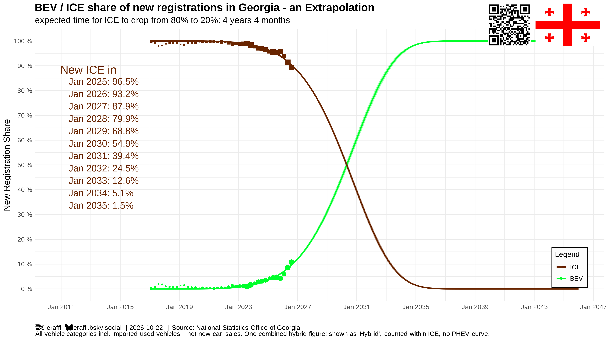
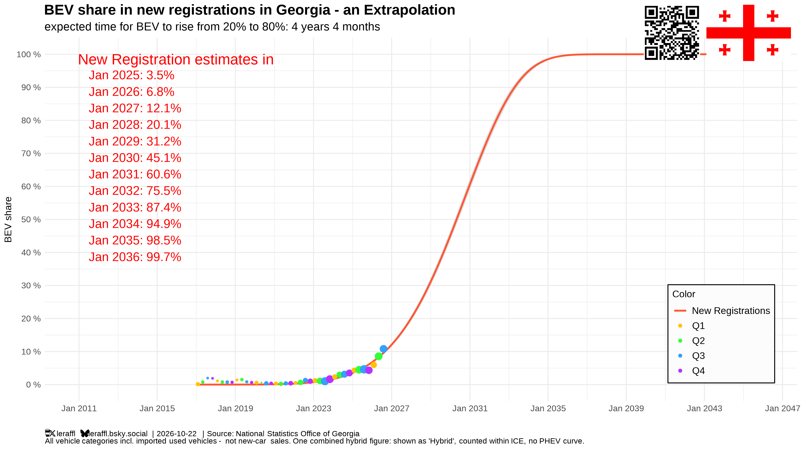
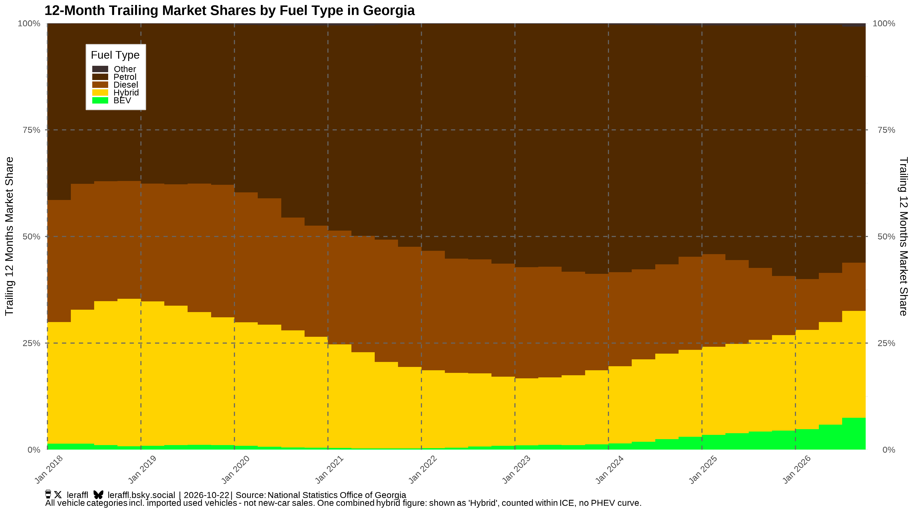
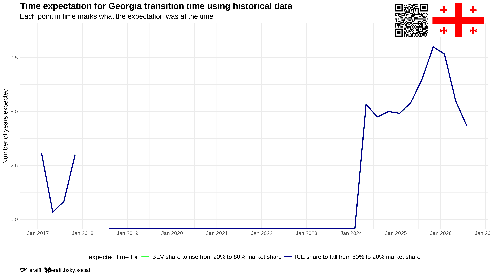

Georgia
Data through August 2026 · curve fitted 2026-10-22 API
Who gained, who lost
Lost share: Diesel 5.6 and petrol 1.5. Gained: Hybrid 3.5 and battery electric 3.3. In percentage points of all new registrations.
Share of new registrations in the last four quarters (Sep 2025 to Aug 2026) against the four quarters before (Sep 2024 to Aug 2025). The changes add up to zero: what one row gains, the others lose. A row appears only where the source fills that column in every period of both windows; everything else is in the last row.
The latest periods
| Period | All registrations | BEV | BEV% | Hybrid% | Everything else% |
|---|---|---|---|---|---|
| Quarter to Aug 2026 | 42,758 | 4,625 | 10. | 26. | 62. |
| Quarter to May 2026 | 43,449 | 3,724 | 8. | 25. | 65. |
| Quarter to Feb 2026 | 35,300 | 2,109 | 6. | 23. | 70. |
| Quarter to Nov 2025 | 41,719 | 1,805 | 4. | 24. | 71. |
| Quarter to Aug 2025 | 46,542 | 2,150 | 4. | 23. | 72. |
| Quarter to May 2025 | 42,445 | 1,907 | 4. | 22. | 73. |
| Quarter to Feb 2025 | 30,426 | 1,316 | 4. | 18. | 77. |
| Quarter to Nov 2024 | 38,625 | 1,358 | 3. | 20. | 75. |
| Quarter to Aug 2024 | 39,259 | 1,234 | 3. | 21. | 75. |
| Quarter to May 2024 | 34,758 | 1,038 | 3. | 21. | 75. |
| Quarter to Feb 2024 | 29,018 | 676 | 2. | 16. | 80. |
| Quarter to Nov 2023 | 43,828 | 716 | 1. | 19. | 79. |
| Quarter to Aug 2023 | 44,913 | 453 | 1. | 18. | 80. |
Shares are the column divided by the source's own total. The last column is what remains after the columns to its left. Newest first.
The fitted curve
| BEV share | Curve reaches it in |
|---|---|
| 10% | 2026 |
| 20% | 2027 |
| 50% | 2030 |
| 80% | 2032 |
| 90% | 2033 |
The fit is provisional: its 80% date moved by 6 years across recent re-fits. No confidence band is shown: none can be stated reliably for this series (too few rows). How the bands are calculated.
The gallery fits a generalized Weibull curve to the BEV share of each period: share(t) = 1 − exp(v1 · (t − t0)v2), t in calendar years. For Georgia: v1 = −2.972 × 10−8, v2 = 6.374, t0 = 2016, fitted through September 2026, model run 2026-10-22. This is the project's own model, not an official forecast. A policy change or a stall is not in it.
The gallery charts


Combustion, battery electric and hybrid curves

BEV share with the fitted curve

Market split, trailing twelve months

Time to reach each BEV shareRendered 2026-10-22 from data through Sep 2026. Charts are CC BY 4.0; open one for the full size.
Where the numbers come from
Quarterly initial vehicle registrations in Georgia by fuel type from Geostat, the National Statistics Office — read automatically from the public API behind its "Automobile" statistics portal.
Who registers the vehicles
Whole · last 12 months (2025-10 → 2026-09) · 163,226 initial (new and imported used) registrations in total. Units are registrations; Brands and models as Geostat's treemap names them — the top 25 brands of each quarter and the top models of each brand; the rest counts towards the total but is not ranked. A model string is Geostat's (hybrid versions such as "FUSION HYBRID" are separate models). Every powertrain together, and every vehicle category (vans and trucks included) — Geostat publishes its brand and model table without a fuel or category split.
The last four quarters Geostat has published, summed — quarterly data, so the twelve months are four whole quarters.
Top brands — % of each powertrain; header: the powertrain's % of all registrationsregistrations; header: the powertrain's total
| # | ALL | 100.0%163,226 |
|---|---|---|
| 1 | Toyota | 15.3%24,908 |
| 2 | Ford | 8.4%13,712 |
| 3 | BMW | 7.1%11,633 |
| 4 | Mercedes-Benz | 6.8%11,015 |
| 5 | Subaru | 6.6%10,766 |
| 6 | Hyundai | 6.2%10,072 |
| 7 | Jeep | 6.0%9,758 |
| 8 | Honda | 4.2%6,829 |
| 9 | Tesla | 4.1%6,727 |
| 10 | Volkswagen | 4.0%6,510 |
| rest | 31.4%51,296 |
Top designations — % of each powertrain; header: the powertrain's % of all registrationsregistrations; header: the powertrain's total
| # | ALL | 100.0%163,226 |
|---|---|---|
| 1 | ForesterSubaru | 2.5%4,146 |
| 2 | CamryToyota | 2.4%3,848 |
| 3 | JettaVolkswagen | 2.4%3,840 |
| 4 | Model 3Tesla | 1.8%2,966 |
| 5 | ElantraHyundai | 1.7%2,747 |
| 6 | Fusion HybridFord | 1.6%2,642 |
| 7 | FusionFord | 1.5%2,447 |
| 8 | RAV 4 HybridToyota | 1.4%2,221 |
| 9 | CrosstrekSubaru | 1.3%2,117 |
| 10 | CherokeeJeep | 1.1%1,874 |
| 11 | PriusToyota | 1.1%1,853 |
| 12 | RAV 4Toyota | 1.1%1,845 |
| 13 | TransitFord | 1.1%1,744 |
| 14 | NiroKIA | 1.0%1,637 |
| 15 | AquaToyota | 1.0%1,612 |
| rest | 77.0%125,687 |
ALL = every powertrain (the source has no brand × fuel table).
Raw source
Go and check the numbers yourself:
Geostat — Automobile statistics portal (initial registrations) ↗
- Geostat Automobile portal — Rating page — set the period switch to "during the period" and pick a year and quarter; the fuel-type chart is the quarter's row in data/Georgia.csv, the treemap is the brand and model table below
- Fuel split of one quarter (the API the page reads) — public JSON, no key — but the API only answers requests that send the portal's Origin / Referer headers, so a bare browser tab may be refused
How the data flows
The portal's period picker lists, per year, the quarters Geostat has published. The fetcher asks for the current year's list (one small request) and stops right there when the newest quarter is already in the chart.
For a new quarter the fetcher reads Geostat's fuel-type table for "vehicles registered during the period" — seven categories — and maps them to the chart's columns. A category it does not know stops the run until someone decides its column.
- ElectricBEV
- HybridHEVplug-in and full hybrids together
- Gasoline, Gasoline-gasPETROLGasoline-gas = petrol cars converted to LPG / CNG
- DieselDIESEL
- Gas, OthersOTHERS
Geostat's own figure for the year (January to the newest quarter) must equal the sum of its quarters, category by category, and the new quarter's total must be at least half of the same quarter a year earlier (a partial upload stops the run). Only then is the quarter written — as a new line; quarters already in the chart are compared and any difference is reported, never written over.
Each new or changed month re-renders the country. Shares are read from the CSV as column ÷ TOTAL and grouped into three curves. A generalized Weibull S-curve is fitted to the BEV and the ICE share, and the charts, the fitted parameters, the twelve-month totals and the uncertainty bands are rewritten.
- BEVBEV
- PHEV or EREV (plug-in hybrids, range extenders)Does the source split plug-ins from other hybrids?
- yesPHEV
- no — one combined hybrid figure (parked in HEV)ICEthe PHEV curve is left out, never drawn at zero
- HEV or MHEV (full and mild hybrids — no plug)ICE
- petrol, diesel, gas, flex-fuel, othersICE
Definitions & scope
| Acquisition | API — pulled from a structured API / query endpoint |
|---|---|
| Vehicle scope | Initial registrations of road motor vehicles in Georgia per quarter — every vehicle category, new and imported used. Georgia's market is dominated by imported used cars (in 2026-Q2 only about one in six newly registered vehicles was at most two years old), so the series measures the drivetrain mix of the vehicles entering the national fleet, not of new-car sales, and is not comparable with ACEA-style new-car counts. |
| HEV (full hybrids) | Geostat publishes one "Hybrid" category for plug-in and full hybrids together; it sits in the HEV column and there is no PHEV column. In the BEV/PHEV/ICE curves the hybrids count as ICE. |
| Backfill | hand-entered from Geostat since 2017-Q1 (the API's first quarter); automated from October 2026. The fetcher reproduces 37 of the 38 hand-entered quarters (2017-Q1 to 2026-Q2) exactly; the 38th, 2023-Q3, had a transcription slip of 10 battery-electric vehicles and was corrected to Geostat's figure — see §5. |
| Auth | none |
Variants
Each variant is its own series with its own CSV. Not every variant is charted in the gallery — the CSV is the authoritative record either way. BEV share and volume cover the last twelve months of each series.
| Variant | What it counts | Held | BEV share | Registrations | Raw data |
|---|---|---|---|---|---|
| Whole | Every vehicle registered in Georgia for the first time in the quarter, as Geostat counts its "initial registrations" — all vehicle categories (passenger cars, light and heavy trucks, buses, special vehicles) and new and imported used vehicles together. This is the scope the series has had since it started; Geostat's fuel table has no vehicle-category or new/used filter. | 2017-02 – 2026-08 39 rows | 7.5% | 163,226 | data/Georgia.csv |
History we hold
Every bar is the span actually present in our stored CSV — breaks in a bar are real gaps in the series, not rendering. Cadence is shown on the right.
Whole 2017-02–2026-08 (39 rows).
Which fuel columns this source fills
A blank column almost never means "no such cars" — it means this source does not split them out, and those vehicles are counted inside another column. Check the caveats for where they land.
| BEV | HEV | PETROL | DIESEL | OTHERS | |
|---|---|---|---|---|---|
| Whole | reported | reported | reported | reported | reported |
reported column exists but is zero in every row not reported by this source. Hover a cell for the row count.
Caveats
- Quarterly, not monthly — each row sits on the quarter's middle month (Feb, May, Aug, Nov), so Georgia has fewer points than the monthly countries and the newest one lags them.
- Every vehicle category, new and imported used together — Geostat's fuel table has no filter for either. Most vehicles are used imports, so the shares describe what enters Georgia's fleet, not new-car sales.
- Plug-in and full hybrids are one combined bucket (HEV column); there is no PHEV curve.
- PETROL includes Geostat's "Gasoline-gas" (petrol cars converted to LPG / CNG); OTHERS is "Gas" plus "Others".
- The brand and model table below covers every powertrain — Geostat publishes brands and models without a fuel split.
- Printed under the charts: All vehicle categories, first registrations incl. used imports (79% over 2 years old, Q3 2026). One combined hybrid figure, counted within ICE, no PHEV curve.
Using this card
Cite as: LeRaffl BEV Trajectory Gallery, Georgia model card, data through August 2026. https://leraffl.github.io/LeRaffl-Gallery/sources/georgia.html
Charts, fitted curves and text are CC BY 4.0: name the gallery when you use them. The registration figures stay with Geostat. The card is rebuilt whenever the data changes, so quote it with its "data through" month.